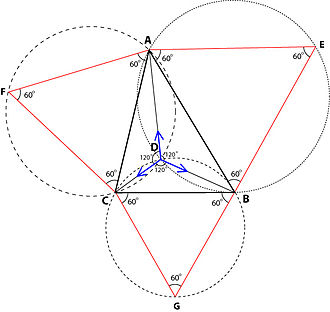
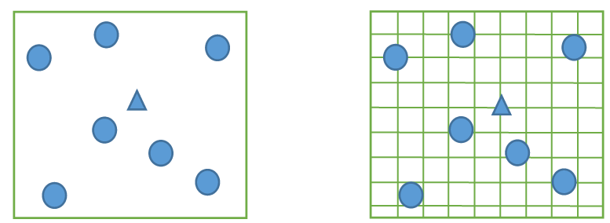
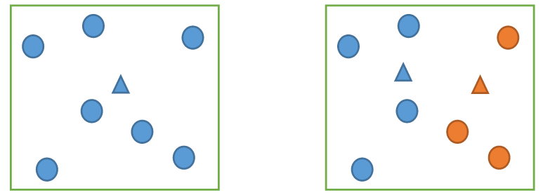
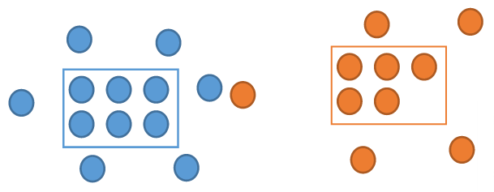
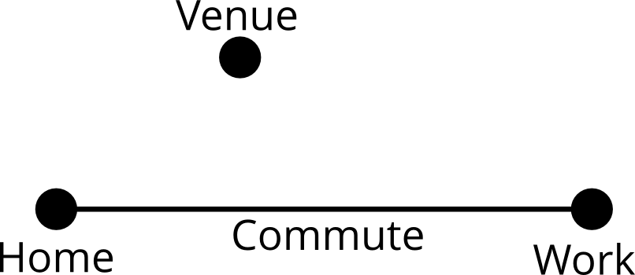
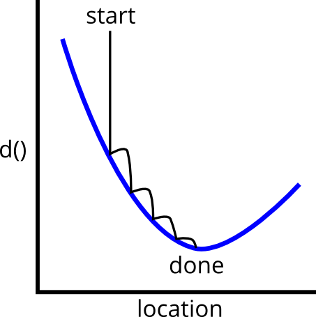
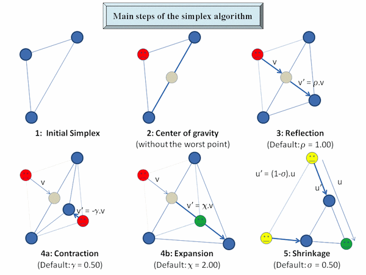
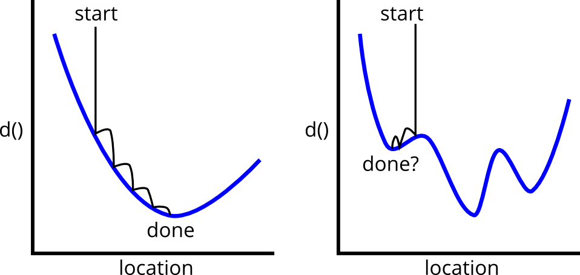
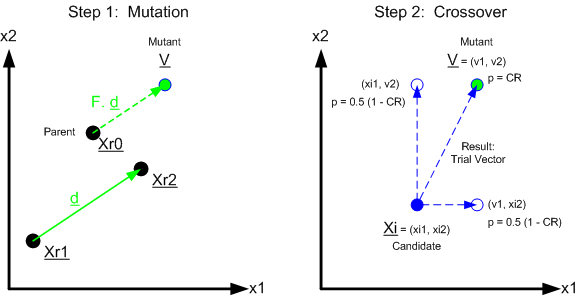

September 15, 2014
Misnomer
Misnomer
Predictive Analytics World – Government
Prescriptive Analytics
Misnomer
Predictive Analytics World – Government
Prescriptive Analytics Local
Misnomer
Predictive Analytics World – Government
Prescriptive Analytics Local – Community
Themes
- 80/20 is Cheap
- Open Source, Modern Tools are Powerful
- Optimization is a key tool of Data Science
(& Operations Research)
Problem
Problem
- Meetup.com – grass-roots professional communities
- 4000+ members; 150-250 attendees
- Part of Data Community DC umbrella
- Where??
Budget
- $0.00
- One half-decent data scientist (me)
- One solid operations researcher (Alan)
- A couple of weekends (more since then)
- One Macbook Air
- R and other modern open-source tools
Data
- survey of Meetup members
- ~150 respondents
- home and work ZIP codes
Some Data
| home_zip | home_city | home_state | home_latitude | home_longitude | |
|---|---|---|---|---|---|
| 1 | 22314 | Alexandria | VA | 38.81 | -77.05 |
| 3 | 22202 | Arlington | VA | 38.86 | -77.06 |
| 4 | 20036 | Washington | DC | 38.91 | -77.04 |
| 5 | 20002 | Washington | DC | 38.90 | -76.99 |
| 6 | 20001 | Washington | DC | 38.91 | -77.02 |
Some Data
| work_zip | work_city | work_state | work_latitude | work_longitude | |
|---|---|---|---|---|---|
| 1 | 20230 | Washington | DC | 38.89 | -77.01 |
| 3 | 22202 | Arlington | VA | 38.86 | -77.06 |
| 4 | 20024 | Washington | DC | 38.88 | -77.02 |
| 5 | 20005 | Washington | DC | 38.90 | -77.03 |
| 6 | 22102 | McLean | VA | 38.94 | -77.22 |
Let's See That
How'd He Do That?!
How'd He Do That?!
rmarkdown– this slide deck is 700 lines, code to solve problem + slides to explain itioslides– HTML5 slide showsrCharts– create web-based charts and maps in RLeaflet– Javascript map library using OpenStreetMap
Mapping R Code
# slightly simplified
mk_commuteline <- function(lat1, lon1, lat2, lon2) {
list(type='Feature',
geometry=list(type='LineString',
coordinates=list(c(lon1, lat1), c(lon2, lat2))))
}
plot_with_linesegs <- function (lat1, lon1, lat2, lon2,
center=white_house, fn=mk_commuteline) {
map <- Leaflet$new()
map$setView(center, zoom = 10)
map$tileLayer(provider = 'Stamen.Toner')
commute_lines <- lapply(seq_along(lat1),
function(i) fn(lat1[[i]], lon1[[i]],
lat2[[i]], lon2[[i]]))
map$geoJson(commute_lines,
style=list(color="#ff5800", weight=5, opacity=0.65))
map
}
with(dat, plot_with_linesegs(home_latitude, home_longitude, work_latitude, work_longitude))
Task
Task
- Find a spot on the map,
- (or maybe more than one),
- that makes those orange lines happy
Location Optimization
Simple Example
Alice works in DC; Bob works in Baltimore.
Where should Alice and Bob live?
Simple Example
Sure.
But What If?
Alice works in DC; Bob works in Baltimore,
but has to make two round-trips per day. Now where?
But What If?
Jessup = \(\frac23 + \frac23 + \frac13 + \frac13 + \frac13 + \frac13 = 2\frac23\)
Baltimore = \(1 + 1 + 0 + 0 + 0 + 0 = 2\)
Location Optimization
- Fermat-Weber

- Continuous / Discrete

- Single / Multiple Location

- Capacitated / Uncapacitated

Location Optimization Applications
- Employee location at UPS
- IKEA (inventory costs)
- Crab pots
- Video surveillance cameras
- Gas stations vs. Electric charging stations
- McDonald’s franchises
- Data centers
- Bicycle sharing system (Capital Bikeshare)
- Mosquito abatement
- Sensor placement on robotics
Back to Meetups!
Cost Functions
How bad is a particular venue/location?
- Work Distance
\[ d(venue, work) = \| x_{venue} - x_{work} \|_2 + \| y_{venue} - y_{work} \|_2 \]
- Commute Distance
\[ d(venue, commute) = \min(d(venue, home),\\ \qquad d(venue, work), d(venue, commute line)) \]
Cost Functions
How bad is a particular venue/location?
- Work Distance
\[ d(venue, work) = \| x_{venue} - x_{work} \|_2 + \| y_{venue} - y_{work} \|_2 \]
- Commute Distance
\[ d(venue, commute) = \min(d(venue, home),\\ \qquad d(venue, work), d(venue, commute line)) \]

Cost Functions
How bad is a particular venue/location?
- Work Distance
\[ d(venue, work) = \| x_{venue} - x_{work} \|_2 + \| y_{venue} - y_{work} \|_2 \]
- Commute Distance
\[ d(venue, commute) = \min(d(venue, home),\\ \qquad d(venue, work), d(venue, commute line)) \]

Cost Function R Code
# http://stackoverflow.com/questions/849211/shortest-distance-between-a-point-and-a-line-segment
p2ls_cost_v <- function(df, cols, lon, lat, km_per_degree=69.11) {
# convert from lat/lon to flat coordinates, using the lat/lon
# ratio at the point in question
param_x = lon * km_per_degree * cos(lat)
param_y = lat * km_per_degree
home_x = df[[cols[[1]]]] * km_per_degree * cos(lat)
home_y = df[[cols[[2]]]] * km_per_degree
work_x = df[[cols[[3]]]] * km_per_degree * cos(lat)
work_y = df[[cols[[4]]]] * km_per_degree
# get the home distances; used if there's no work distance
home_dists <- dist(home_x, param_x, home_y, param_y)
# then, get the distances to the line segment, which may be NA
# length of the segment (squared)
l2 <- (home_x - work_x)^2 + (home_y - work_y)^2
# t is the position of closest point on segment, with endpoints 0 and 1
t <- (param_x - home_x) * (work_x - home_x) +
(param_y - home_y) * (work_y - home_y)
t <- t / l2
proj_x <- home_x + t * (work_x - home_x)
proj_y <- home_y + t * (work_y - home_y)
seg_dists <- ifelse(t < 0,
home_dists,
ifelse(t > 1,
dist(work_x, param_x, work_y, param_y),
dist(proj_x, param_x, proj_y, param_y)))
ifelse(is.na(seg_dists), home_dists, seg_dists)
}
Scoring Workspaces
work_locs <- unique(select(dat, work_longitude, work_latitude)) %>%
filter(!is.na(work_longitude))
names(work_locs) <- c('lon', 'lat')
work_locs <- work_locs %>%
rowwise() %>%
do(data.frame(., cost=p2ls_cost(dat, .$lon, .$lat)))
work_locs$goodness <- 1-(work_locs$cost / max(work_locs$cost))
Scoring Workspaces
We Want the Best!
(ignoring roads, rivers, subways, traffic…)
Optimization

\[ \underset{loc}{\operatorname{argmin}} \sum_{person} d(loc, \operatorname{commute}_{person}) \]
Optimization – Nelder-Mead/Simplex

- gradient-free, heuristic nonlinear optimization
- not the state of the art, but good enough
- this problem is actually convex; could solve it much faster
Optimization in R
p2ls_cost_opt <- function(params) {
p2ls_cost(dat, params[[2]], params[[1]]) # lon then lat...
}
best_point <- optim(white_house,
p2ls_cost_opt,
control=list(trace=1))
## Nelder-Mead direct search function minimizer ## function value for initial parameters = 659.085159 ## Scaled convergence tolerance is 9.82113e-06 ## Stepsize computed as 7.703660 ## BUILD 3 74320.083273 659.085159 ## HI-REDUCTION 5 37254.221075 659.085159 ## HI-REDUCTION 7 33416.429094 659.085159 ## HI-REDUCTION 9 27344.568502 659.085159 ## LO-REDUCTION 11 20329.054875 659.085159 ## HI-REDUCTION 13 7739.064417 659.085159 ## HI-REDUCTION 15 6992.585388 659.085159 ## HI-REDUCTION 17 4511.504646 659.085159 ## LO-REDUCTION 19 3902.268569 659.085159 ## HI-REDUCTION 21 2070.013082 659.085159 ## HI-REDUCTION 23 2044.259019 659.085159 ## LO-REDUCTION 25 1566.838933 659.085159 ## HI-REDUCTION 27 1113.153154 659.085159 ## LO-REDUCTION 29 797.358641 659.085159 ## HI-REDUCTION 31 761.849417 659.085159 ## HI-REDUCTION 33 685.338382 659.085159 ## LO-REDUCTION 35 682.842258 646.293945 ## HI-REDUCTION 37 659.085159 646.293945 ## HI-REDUCTION 39 649.383945 636.194239 ## HI-REDUCTION 41 646.293945 636.194239 ## LO-REDUCTION 43 642.210294 636.194239 ## HI-REDUCTION 45 638.523382 636.194239 ## LO-REDUCTION 47 637.577386 636.194239 ## HI-REDUCTION 49 636.681647 636.194239 ## LO-REDUCTION 51 636.247086 636.033124 ## HI-REDUCTION 53 636.194239 636.008852 ## LO-REDUCTION 55 636.033124 635.909965 ## HI-REDUCTION 57 636.008852 635.909965 ## LO-REDUCTION 59 635.919572 635.899736 ## HI-REDUCTION 61 635.909965 635.896471 ## HI-REDUCTION 63 635.899736 635.891676 ## HI-REDUCTION 65 635.896471 635.889239 ## EXTENSION 67 635.891676 635.876360 ## LO-REDUCTION 69 635.889239 635.875490 ## HI-REDUCTION 71 635.877783 635.875490 ## HI-REDUCTION 73 635.876360 635.873283 ## HI-REDUCTION 75 635.875490 635.871572 ## HI-REDUCTION 77 635.873283 635.871572 ## REFLECTION 79 635.872561 635.869487 ## HI-REDUCTION 81 635.871572 635.869487 ## LO-REDUCTION 83 635.870628 635.869487 ## REFLECTION 85 635.869779 635.869404 ## HI-REDUCTION 87 635.869487 635.868943 ## REFLECTION 89 635.869404 635.868907 ## LO-REDUCTION 91 635.868959 635.868907 ## REFLECTION 93 635.868943 635.868597 ## HI-REDUCTION 95 635.868907 635.868546 ## HI-REDUCTION 97 635.868597 635.868518 ## HI-REDUCTION 99 635.868546 635.868345 ## HI-REDUCTION 101 635.868518 635.868345 ## HI-REDUCTION 103 635.868406 635.868345 ## HI-REDUCTION 105 635.868366 635.868345 ## HI-REDUCTION 107 635.868346 635.868315 ## HI-REDUCTION 109 635.868345 635.868315 ## HI-REDUCTION 111 635.868318 635.868308 ## Exiting from Nelder Mead minimizer ## 113 function evaluations used
Winner!
1225 Connecticut Ave NW
But
Think of the Children…
in Montgomery County…
Three-Location Optimum
Goal:
- Make everyone happy,
- at least some of the time,
- by rotating among several venues.
Three-Location Optimum
Goal:
- Make everyone happy,
- at least some of the time,
- by rotating among several venues.
Mini-min cost formula:
\[ \underset{loc}{\operatorname{argmin}} \sum_{person} \min_{loc_i} d(loc_i, \operatorname{commute}_{person}) \]
(6 parameters vs. 2)
Problem
Optimization

One-location problem is convex.
Three-location problem isn't – discrete min in cost formula is a discontinuity.
Solution
Global Optimization

- a.k.a. "Computing Power is Cheap"
- Using
DEoptim– Directed Evolution
- Handwavy-explanation
- Have a population of candidate solutions
- Combine triples, extrapolating in promising directions
- Randomly combine other pairs
- Evaluate the cost function, taking the best
- Repeat until done (bored)
Cost of Meetup Locations
colnames <- c("home_longitude", "home_latitude",
"work_longitude", "work_latitude")
p2lsN_cost <- function(dat, latlons) {
# for each pair of latlons, calc p2ls_cost
# result is 3 x # of people matrix
costs <- laply(1:(length(latlons)/2),
function(i) p2ls_cost_v(dat,
colnames,
lat=latlons[[i*2-1]],
lon=latlons[[i*2]]))
sum(aaply(costs, 2, min))
}
p2lsN_cost_opt <- function(latlons) {
p2lsN_cost(dat, latlons)
}Best Three Meetup Locations
Best Three Meetup Locations
- 15th and M, near the Post
- Arlington, West of National Airport
- off Rockville Pike
Three Concluding Thoughts
- You can do more than ever.
- Community of people and tools.
- Prescriptive Analytics are powerful, accessible.
Four Final Things
- Slides are here:
https://github.com/HarlanH/loc-opt-demo-slides
- Come to Data Science DC! Tonight! 7pm! Lightning talks!
harlan@datacommunitydc.org,@harlanh
- Thanks!